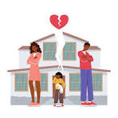

ABANDONO
Delito cometido por quien dejare de cumplir los deberes legales de asistencia inherentes a la patria potestad, tutela, guarda o acogimiento familiar, o de prestar la asistencia necesaria legalmente establecida para el sustento de sus descendientes, ascendientes o cónyuge que se hallen necesitados.
Referiado desde
Abandono del domicilio, abandono del hijo o de la hija, abandono del hogar conyugal, entrega de menor, omisión de prestación de alimentos
Sublemas
-abandono de familia por incumplimiento de la prestación para el sustento
-abandono de familia por incumplimiento de los deberes legales de asistencia
